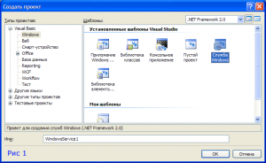
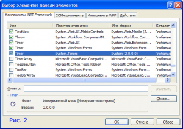
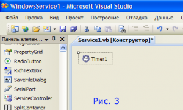

Как написать простейший сервис (Службу Windows) на VB .NET
Опубликовано Январь 3, 2016 автором Памирыч
Наша служба будет предельно простой. В ее задачу будет входить лишь ведение бесполезного лога в файл.
Вся задача сводится к двум моментам:
Чтобы приступить к написанию программного кода, необходимо выбрать соответствующий шаблон в составе Visual Studio
Предполагается, что у нашего сервиса не будет визуального интерфейса.
Нам понадобится таймер, но не тот, что мы привыкли использовать в WinForms
На рис. 2 показан этот таймер в момент его выбора и размещения на панели инструментов
Добавляем его в проект привычным двойным щелчком
Настраиваем его свойства, в частности, интервал, пусть это будет 1 секунда. Активность таймера выставлять не будем, пусть за нас это сделает сам сервис.
В редакторе кода код будет выглядеть следующим образом:
Visual Basic .NET
|
Public Class Service1
Protected Overrides Sub OnStart(ByVal args() As String) ' Добавьте здесь код запуска службы. Этот метод должен настроить все необходимое ' для успешной работы службы. Timer1.Start() 'Запускаем таймер End Sub
Protected Overrides Sub OnStop() ' Добавьте здесь код для завершающих операций перед остановкой службы. End Sub
Private Sub Timer1_Elapsed(ByVal sender As System.Object, ByVal e As System.Timers.ElapsedEventArgs) Handles Timer1.Elapsed My.Computer.FileSystem.WriteAllText("C:\LOG.txt", "Сообщение сервиса в " & Now.ToLongTimeString & ": Успешно" & vbCrLf, True) End Sub End Class |
Вот, пожалуй, и все, что необходимо.
По желанию можно зайти в свойства проекта и настроить его.
Компилируем сервис как обычно — Меню — Построение — Построить <Имя Вашего сервиса>
После этого в папке Release появится исполняемый файл. Здесь же отмечу, что такие файлы двойным щелчком не запускаются и так же по F5;
В этом случае VS пояснит, что служба не может быть запущена непосредственно из-под отладчика.
Как бы там ни было, файл готов. И мы хотим видеть его работу.
Чтобы это сделать, нам придется установить сервис в систему. Для этого воспользуемся одним из методов.
Создадим Bat-файл в той же директории, что и сам файл сервиса.
Содержание файла:
INI
|
set current_dir=%~dp0 sc create MyTestService binPath= "%current_dir%WindowsService1.exe" start= "auto" sc start MyTestService pause |
Второй строкой мы устанавливаем службу с параметром автозапуска «Автоматический»
Третьей строкой запускаем службу.
Результат показан на рис. 4
Достаточно простой установки, а настройку можно произвести в:
Панель управления — Администрирование — Службы
Сразу же замечу, что в такой службе не будет визуализации, даже MsgBox
Написанное ниже применимо к ОС Windows XP.
Чтобы сообщения были видны пользователю, нужно, чтобы служба работала в интерактивном режиме.
Для этого в настройках службы (Панель управления — Администрирование — Службы) нужно поставить флаг «Разрешить взаимодействие с рабочим столом»
Либо установить службу немного иначе:
INI
|
sc create MyTestService binPath= "%current_dir%WindowsService1.exe" type= interact type= own |
После всех экспериментов не забывайте удалить службу:
INI
|
sc delete MyTestService |
{kind=link}
{kind=link}
{kind=link}
{kind=link}